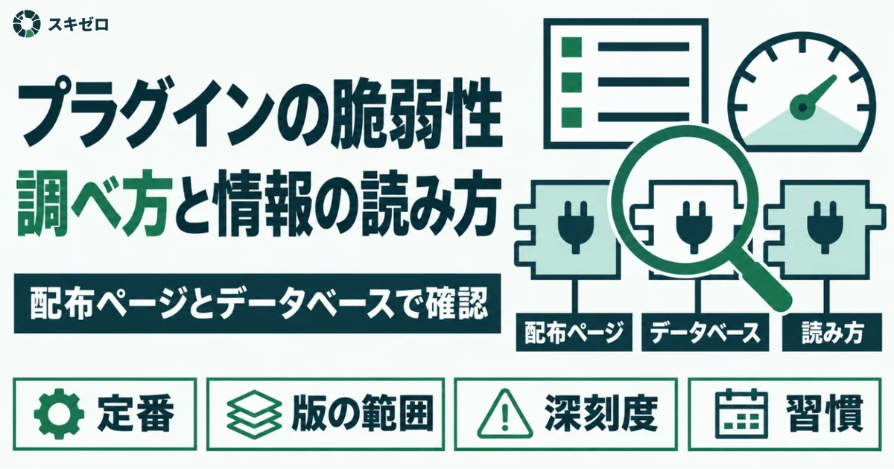
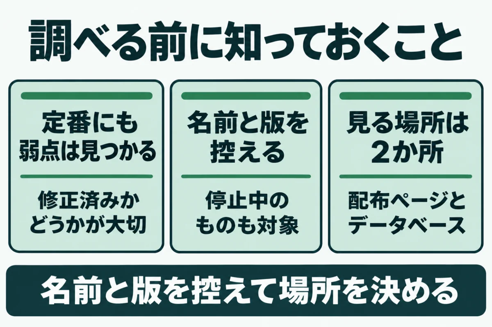
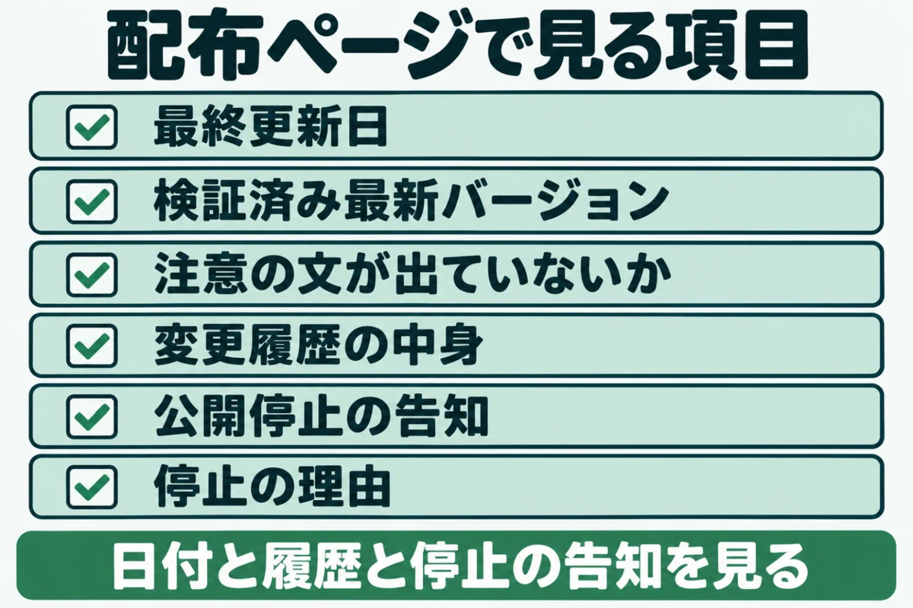
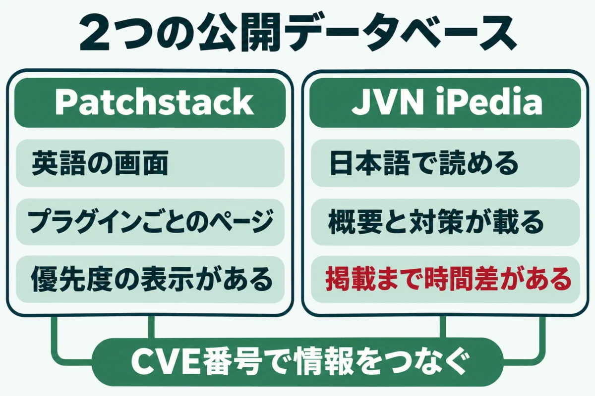
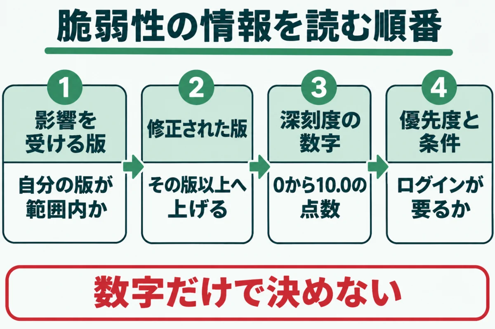
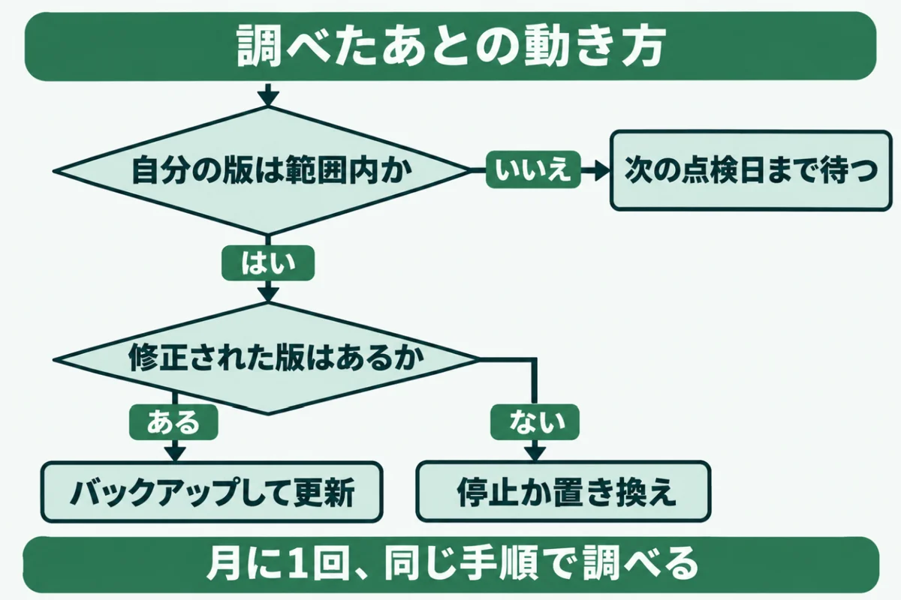

プラグインの脆弱性の調べ方定番プラグインの弱点を配布ページとデータベースで確かめる手順

使っているプラグインに弱点が出ていないか、調べ方が分からず困っていませんか？
定番と呼ばれるプラグインにも、脆弱性は見つかっています。その情報は、誰でも無料で見られる場所に公開されているのです。
この記事では、配布ページと公開データベースの見方を順にまとめました。情報の読み方と、調べたあとの動き方、習慣の作り方も扱います。
画面の名前と件数は、2026年11月27日に確かめたものです。英語の画面も出てきますが、見る項目は多くありません。
プラグインの脆弱性の調べ方で、最初に知っておきたいこと

プラグインの脆弱性の調べ方は、難しくありません。使っているプラグインの名前と版を控え、決まった場所で探すだけです。専門の道具も要りません。
見る場所は、WordPress.orgの配布ページと、脆弱性の公開データベースの2か所です。どちらも無料で、登録なしで開けました。先に、調べる前の準備から見ていきましょう。
定番のプラグインにも脆弱性は見つかっている
利用者が多いプラグインは、弱点を探す人も多くなります。Patchstackは、脆弱性の情報を集めたデータベースを公開している会社です。そこでContact Form 7のページを開くと、過去の脆弱性が10件並んでいました。表示は「0 present」「10 patched」でした。残っている弱点が0件、修正済みが10件という意味です。2026年11月27日時点の数字になります。弱点が見つかること自体は、珍しくないのです。大切なのは、修正された版を使っているかどうかでしょう。
調べる前に、プラグインの名前と版を控える
管理画面の「プラグイン」から「インストール済みプラグイン」を開きます。それぞれの説明の欄に、「バージョン」に続けて版の番号が出ているはずです。プラグインの名前と版を、表に書き写しましょう。一覧の上の「停止中」を押すと、止めているものだけを見られます。停止中のプラグインも、調べる対象に入れてください。IPAの20ヶ条も、サイトを作っているソフトウェアの把握を求めました。脆弱性の情報は版ごとに書かれるので、版が分からないと照らし合わせられません。
脆弱性の情報が載る場所は、大きく2か所ある
1か所目は、WordPress.orgにあるプラグインの配布ページです。更新の日付や履歴、配布が止まっていないかを確かめられます。2か所目は、脆弱性の情報を集めた公開データベースです。この記事では、PatchstackとJVN iPediaの2つを扱いました。どちらにも、CVEという共通の識別番号が載っています。IPAの解説によると、CVEは米国のMITRE社が採番している識別子です。番号は「CVE-西暦-連番」の形で、別々のサイトの情報をつなぐ手がかりに使えます。
プラグインの脆弱性の調べ方は、WordPress.orgの配布ページから始める

プラグインの脆弱性の調べ方として、最初に開くのはWordPress.orgの配布ページです。開発が続いているかどうかが、1ページで分かります。
開発が続いていれば、弱点が見つかっても修正版が届くからです。止まっていれば、弱点は残ったままになるでしょう。管理画面の一覧にある「詳細を表示」からも、同じ情報の一部を見られます。
最終更新日と、検証済み最新バージョンを見る
配布ページには、プラグインの基本の情報が並んでいます。「バージョン」「最終更新日」「検証済み最新バージョン」といった項目です。最終更新日が何年も前なら、開発が止まっている疑いがあります。長く手入れのないものには、注意の文が出るのです。「最新3回のメジャーリリースに対してテストされていません」と書かれます。公式の手引きによると、開発者が試した版の情報をもとに出る表示でした。出ていたら、置き換えの候補として表に印を付けましょう。
変更履歴で、修正の中身を確かめる
配布ページの「変更履歴」には、版ごとの変更の内容が書かれています。管理画面の「詳細を表示」では、「更新履歴」というタブです。「security」や「脆弱性」といった語がないかを探しましょう。ただし、履歴の文面だけでは弱点の修正かどうかが分からないこともあります。Contact Form 7では、版ごとに「リリース告知」へのリンクが並ぶ形でした。2026年11月27日時点の表示です。判断がつかないときは、公開データベースと突き合わせてください。
公開停止の告知と、その理由を確かめる
配布が止まったプラグインのページには、告知が出ます。「このプラグインの公開は…停止されており、ダウンロードできません」という文です。続く「理由:」の欄に、「セキュリティ上の問題」と書かれた例もありました。公式の手引きは、作者の希望や指針への違反も理由に挙げています。理由が表示されるのは、停止の60日後とのことです。運営者の自社サイトの点検でも、配布が止まったプラグインが残っていました。見つけたときの判断は、WordPressの使っていないプラグインは削除すべき？判断の基準と安全な消し方にまとめています。
プラグインの脆弱性の調べ方として、公開データベースで名前を探す

配布ページの次は、公開データベースでプラグインの名前を探します。脆弱性ごとに、影響を受ける版と修正版が載っているからです。配布ページだけでは、どの版が危ないのかまでは分かりません。
英語のPatchstackと、日本語のJVN iPediaを順に見ていきましょう。どちらも無料で公開されています。載る時期に差があるため、両方を見るのが勧めです。
Patchstackで、プラグインごとのページを開く
Patchstackのデータベースは、登録なしで開けます。トップには「Search」という検索の欄がありました。プラグインごとのページには、「Latest version」などの項目が並びます。その下の「Vulnerability history」が、脆弱性の履歴です。「present」は残っている弱点の件数を表します。一覧の各行には、弱点の種類、影響を受ける版、日付が書かれていました。日付は「18/11/2026」のように、日・月・年の順です。
JVN iPediaで、日本語の情報を探す
JVN iPediaは、脆弱性対策の情報を日本語で公開しているデータベースです。IPAの発表によると、2026年9月末までの累計は310,240件になりました。米国のNVDなどから情報を集めており、WordPress用のプラグインの情報も載っています。キーワードや製品名で検索する使い方です。1件ごとに、概要、深刻度、影響を受けるシステム、対策が並んでいました。点検などで、サービスが止まっている時期もあります。開けないときは、日をあらためて試しましょう。
CVE番号で、同じ脆弱性の情報をつなぐ
同じ弱点でも、サイトによって題名の書き方が違います。そこで役に立つのが、CVE番号です。Patchstackでは「CVE ID」の欄に載っていました。JVN iPediaでは、「共通脆弱性識別子(CVE)」という欄です。番号が同じなら、同じ弱点の情報だと判断できます。IPAの解説にも、対策情報どうしの関連付けに使えるとありました。控えの表に番号も書いておくと、あとで探し直すときに便利です。制作会社に相談するときも、番号を伝えると話が早く進むでしょう。
プラグインの脆弱性の調べ方で迷わないための、情報の読み方

脆弱性の情報で最初に見るのは、深刻度の数字ではありません。自分の版が影響を受ける範囲に入るかです。
範囲の外なら、その情報の弱点は自分の版には当てはまりません。範囲に入っていたら、修正された版と深刻度を読みましょう。英語の画面でも、見る項目は4つほどで足ります。順番を決めておくと、読み違いが減るでしょう。
影響を受ける版と、修正された版を読む
Patchstackでは、「Vulnerable versions」が影響を受ける版です。「<= 1.2.6.8」なら1.2.6.8以下、「< 6.2.5」なら6.2.5より前を指します。「6.2-6.2.3」のように、下の端と上の端の両方が書かれる例もありました。この場合、6.2より前の版は範囲の外です。「Patched in」が修正された版で、その版以上なら直っています。JVN iPediaでは、「3.0.1 未満」のように日本語で書かれる形でした。自分の版と1つずつ見比べましょう。
- 参考：WordPress Contact Form 7 Plugin 6.2-6.2.3 is vulnerable to a medium priority Arbitrary File Upload｜Patchstack
- 参考：JVNDB-2024-024279｜JVN iPedia 脆弱性対策情報データベース
深刻度の数字（CVSS）の意味を知る
深刻度の数字は、CVSSという共通の物差しで付けた点数です。IPAの解説（2022年4月更新）では、0から10.0までの数値で表します。9.0以上が「緊急」、7.0以上が「重要」という区分です。JVN iPediaでは、「4.8 (警告)」のように数字と区分が並んでいました。Patchstackでは、「CVSS severity」の欄に数字が出ます。この点数は、脆弱性そのものの特性を評価した基本値です。攻撃が実際に起きているかや、自社の使い方は含みません。
| 深刻度 | CVSSの点数 |
|---|---|
| 緊急 | 9.0〜10.0 |
| 重要 | 7.0〜8.9 |
| 警告 | 4.0〜6.9 |
| 注意 | 0.1〜3.9 |
| なし | 0 |
数字だけで決めず、優先度と条件も見る
点数が高くても、急ぐ度合いが同じとは限りません。Patchstackは、悪用されそうかを予測した独自の優先度も付けています。「Patchstack priority」の欄で、High、Medium、Lowの3段階です。Contact Form 7の例では、CVSSが8.1で、優先度はMediumでした。「Required privilege」は、悪用に要る権限を表します。「Unauthenticated」なら、ログインなしで悪用できるという意味です。同社は、CVSSはWordPressには最適でないとも注記していました。
- 参考：Patchstack Is Introducing Patchstack Priority｜Patchstack
- 参考：WordPress Contact Form 7 Plugin 6.2-6.2.3 is vulnerable to a medium priority Arbitrary File Upload｜Patchstack
プラグインの脆弱性の調べ方を習慣にして、調べたあとに動く

プラグインの脆弱性の調べ方は、1回覚えて終わりではありません。月に1回など、日を決めて繰り返すと役に立ちます。
新しい弱点は、毎日のように公表されているからです。Patchstackの一覧にも、数時間前に公開された情報が並んでいました。調べた結果ごとの動き方も、先に決めておきましょう。決めてあれば、見つけたときに迷いません。
調べた結果ごとに、動き方を決めておく
自分の版が範囲の外なら、次の点検日まで様子を見ます。範囲に入っていて修正された版があれば、バックアップを取って更新してください。Patchstackは、優先度ごとに更新までの目安の日数を示しました。Highは0日、Mediumは7日、Lowは30日です。2023年11月の同社の記事にある目安になります。修正された版がないときは、停止や置き換えを考えましょう。詳しい手順は、WordPressのプラグインに脆弱性が見つかったときの対処法にまとめています。
月に1回、表を見ながら調べる日を決める
習慣にするこつは、日と手順を固定することです。たとえば毎月1日に、控えておいた表を開きます。管理画面で版を書き直し、配布ページとデータベースを順に見てください。表には、調べた日と結果を書き込む欄を足しましょう。前の月との違いが、ひと目で分かるようになります。IPAの20ヶ条も、ソフトウェアの脆弱性対策を定期的に行うよう求めているのです。使っていないプラグインを減らしておくと、調べる手間も減ります。
新しい情報が届く仕組みを足す
月に1回の点検のあいだにも、急ぎの弱点は公表されます。知らせが届く仕組みを、1つ足しておくと安心です。Patchstackのページには、週1回のメールを申し込む欄がありました。JVN iPediaには、メールで知らせるサービスがありません。代わりに、新着の情報をRSSで配っているのです。プラグインの自動更新を有効にする方法もあるでしょう。任せる範囲の決め方は、WordPressの自動更新は有効にすべき？良い点と注意点｜任せる範囲の決め方と確かめ方で紹介しました。
- 参考：WordPress Contact Form 7 Plugin 6.2-6.2.3 is vulnerable to a medium priority Arbitrary File Upload｜Patchstack
- 参考：よくある質問と答え（FAQ）｜JVN iPedia 脆弱性対策情報データベース
URLを入れるだけで、プラグインやWordPress本体など8項目を無料で判定します。無料簡易診断が見るのは、外から見える範囲だけです。結果票（A4・全8ページ）では、脆弱性情報（NVD）との照合も行います。続けて見張りたい場合は、定期診断のライトが月4,980円、スタンダードが月19,800円です（どちらも税込）。
無料で診断するプラグインの脆弱性の調べ方に関するよくある質問
データベースが英語で不安です。英語が苦手でも調べられますか？
調べられます。見る項目が限られているからです。Patchstackなら、版の範囲、修正された版、要る権限の3つの欄で足りるでしょう。どれも、版の番号や決まった語が入る欄です。日本語で読みたいときは、JVN iPediaを使ってください。概要や対策が日本語で書かれています。ブラウザーの翻訳の機能を使うときも、版の番号は原文で確かめましょう。
データベースに載っていなければ、そのプラグインは安全ですか？
載っていないことは、安全の証明にはなりません。まだ見つかっていないか、公開の前という場合があるからです。Patchstackのトップには、「In triage」という件数が1,507件と出ていました。確認の途中にある情報の数で、2026年11月27日時点の表示です。JVN iPediaも、NVDで分析が終わるまで掲載されません。載っていないプラグインも更新を続け、配布ページの表示を見てください。
どのくらいの頻度で調べればよいですか？
目安は月に1回です。加えて、プラグインの更新の知らせを見たときにも調べましょう。Patchstackは、優先度がHighの弱点には0日での更新を勧めています。月に1回の点検だけでは、間に合わない弱点もあるわけです。週1回のメールなど、知らせが届く仕組みと組み合わせてください。問い合わせフォームのように外から入力を受けるプラグインは、とくに気にかけましょう。
脆弱性が見つかったことのあるプラグインは、使うのをやめるべきですか？
過去に見つかったというだけで、やめる必要はありません。定番のContact Form 7にも、10件の履歴がありました。どれも修正済みで、2026年11月27日時点の表示です。見るべきなのは、修正された版が出ているかどうかでしょう。修正が出ないまま時間がたっているものは、置き換えを考えます。配布が止まり、理由にセキュリティ上の問題と出ているものも同じ扱いです。
調べる時間が取れないときは、どうすればよいですか？
保守を頼んでいる制作会社があれば、脆弱性の確認が契約に入っているかを聞いてください。入っていなければ、月に1回の確認を頼めるか相談しましょう。スキゼロの無料簡易診断は、外から見える範囲でプラグインなど8項目を判定します。結果票では、脆弱性情報との照合も行っているのです。続けて見張りたい場合は、定期診断も選べます。管理画面の中までは見ないため、版の控えは自社でも続けてください。
まとめ
定番のプラグインにも、脆弱性は見つかります。大切なのは、見つかった情報を早く知り、修正された版へ上げることです。
調べ方は、名前と版を控え、配布ページとデータベースを見る流れでした。影響を受ける版、修正された版、深刻度の順に読みましょう。月に1回の点検を決めて、表に結果を書き残してください。
まずは、今の状態を知るところから。
URLを入れるだけで、数十秒で判定が出ます。登録はいりません。